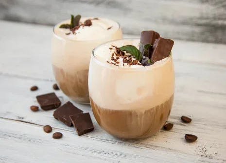
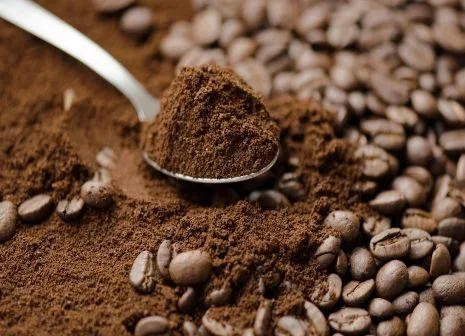
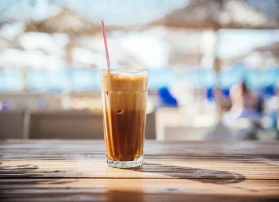

What is an Americano?
The americano is often mistaken
for just a standard black coffee,
but it's so much more than that.

What is a Cortado?
The cortado is relatively new in the world
of coffee and many get it confused with a
flat white. So, what is a cortado and
what makes it different?

What is a Mocha?
Deliciously sweet, nutty and chocolatey.
Find out what is a mocha, where it came
from & how it's different.

What is a Macchiato?
An espresso coffee drink, topped with
a small amount of foamed milk to enable
the espresso taste to shine through.

What is an Irish Coffee?
Irish coffee has four main ingredients:
coffee, Irish whiskey, sugar and cream.
But there are many variations of this
classic coffee drink, which we willl
explore later.

What is a Café au Lait?
The Café au Lait is made using brewed
coffee and steamed milk, in a typical
ratio of one part coffee to one part
steamed milk with no froth or foam on
top (sometimes certain coffee shops will add it though).
The coffee base is usually made with a French press or
a drip and the milk must always be steamed.

What is Instant Coffee?
nstant coffee is made from real coffee beans.
The soluble and volatile contents of the beans
are extracted. Then the water is removed so powder
or concentrated soluble coffee powder are left over.
It’s essentially been dehydrated for our convenience.

What is Cold Brew?
Cold brew coffee is made by slowly steeping
coarsely ground coffee beans in room temperature
water for at least six hours (it can be as much
as up to 24, but it depends on how strong you
want your cold brew it to be, many choose to do it overnight).

What is a Flat White?
A flat white is a blend of micro-foamed milk poured
over a single or double shot of espresso. This microfoam is steamed
milk infused with air, to create a smooth and velvety texture and creamy taste.
Precise pouring and steaming of the microfoamis essential in making a flat white.

What is an Iced Coffee?
If you’re asking yourself ‘what is an iced coffee?’,
then look no further. Quite simply, an iced coffee is a cold
version of your favourite coffee, but it’s not simply a coffee that
has been left to cool.

What is Drip Coffee?
Drip coffee is made by pouring boiling water
over ground coffee (the grind of which being
much coarser than espresso). A filter that
is typically made from paper separates the
grounds from the brewed liquid which allows
the water to pass through and fall into a pot or jug.

What is a Decaf?
Decaf coffee is made from regular coffee
beans that go through a process to remove the majority
of the caffeine. However, decaffeinated coffee is not completely
caffeine free, and EU regulation for decaf coffee is less than 0.3% caffeine.